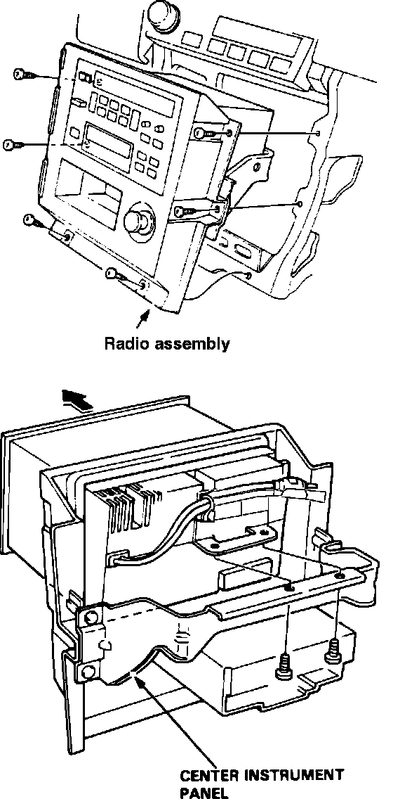

Radio/Stereo: Service and Repair
Radio Replacement:

CAUTION: All SRS (air bag) wire harnesses and connectors are colored yellow. Do not use electrical test equipment on these circuits. Be careful not to damage SRS wiring, connectors, and components when servicing the sound system. Replace entire affected SRS harness assembly if it has an open circuit or damaged wiring.
NOTE: Acura radio removal procedures do not specifically require SRS disarming. However, if extensive sound system repairs are being performed, the system should be disarmed to ensure technician safety. See Air Bag (SRS) System Disarming.
1. Remove front console.
2. Remove 6 screws and center instrument panel with radio/cassette player. Unplug 16 pin connector, 2 antenna leads, and 4 pin connector from cigarette lighter.
3. Remove 2 attaching screws and pull radio from center panel.
4. Reverse procedure to install.